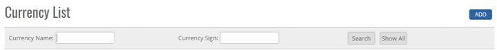
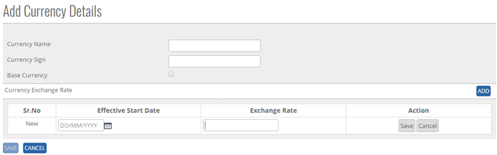
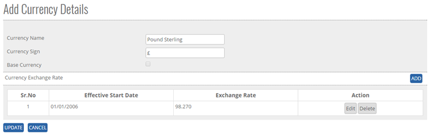
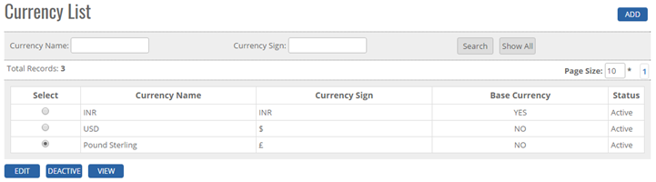
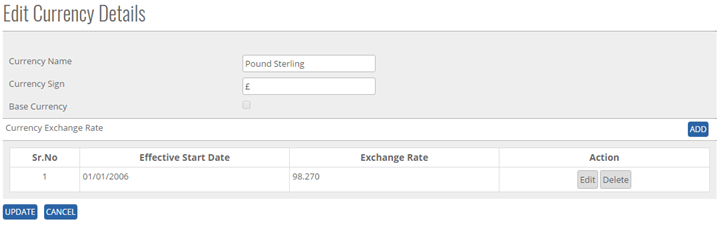
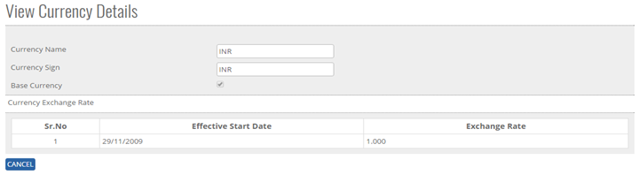
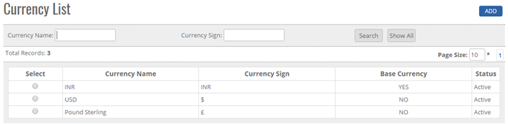


	<section>
		<article>
			<h2>Currency<span></span></h2>
			<div>
				<p></p>
				<p>Currency comes under <strong>Master Module</strong>. It can be accessed by user who has rights for this module.</p>

				<p>- Click on Currency. User will get currency list Page and also on top right corner <strong>ADD</strong> button will be visible. </p>
				<div class="triangle-border top">				
					
				</div>

				<p>Go to Master >> Currency >> ADD. Click on ADD Button the below following page will be open.</p>
				<div class="triangle-border top">
					
				</div>
				<p>To add currency in the system, system will be having following fields:</p>

				<p>- Currency Name & Currency sign both are mandatory field and both should have unique details.<br>
						- Base Currency </p>
				<p><strong>Currency Exchange rate</strong> </p>
				<p>When user clicks on <strong>Add Button</strong> as shown above, system shows Effective start date, Exchange Rate, Action and Save/Cancel Button.</p>

				<p><strong>Effective Start Date -</strong> click on effective start date, it will show the calender control.</p>

				<p><strong>Exchange Rate -</strong> user can enter the numeric value up to 3 character including 1 decimal </p>

				<p><strong>Save - </strong>when user clicks on save button, Currency exchange rate will be saved and user will get the alert message "Record Saved Successfully".</p>

				<div class="triangle-border top">
					
				</div>
				<p><strong>Cancel - </strong>when user will click on cancel button, data will not be saved in the system.</p>
				<p><strong>Note:</strong> Exchange rate is valid for the first effective date and its start with the new exchange rate when effective start date is entered. Effective start date cannot be future date. It will show the alert message for user Knowledge. </p>
				<p><strong>Modify existing Currency</strong></p>
				<div class="triangle-border top">
					
				</div>
				<p>Click on Select Radio Button, user can able to see currency name, currency sign, base currency, status, Search, Show all, view and page record.</p>

				<p>Go to >>Master>>Currency>>Search Currency Name >> OR currency sign>> Click Radio Button (Select)>> Edit</p>

				<p>System will allow to edit all detail given above Like Currency name, Currency Sign, Effective start date, Exchange rate, Update and cancel.</p>
				 
				<div class="triangle-border top">
					
				</div>

				<p>- Click on edit button, User can modify the currency Name, Currency sign, Effective start date, Exchange Rate,</p> 

				<p><b>Note:</b> Effective start date cannot be repeatable nor be a future date.</p>

				<p>- Once the record modify done click on update button the data will be saved. </p>

				<p><strong>View Existing Currency</strong></p>

				<div class="triangle-border top">
					
				</div>

				<p>Currency name, Currency sign, base currency, Effective start date, Exchange rate will be shown.
				Cancel button should be shown, and all fields will be shown correctly as added previously and cancel button will be visible at the end of the page (All fields will be Non-Editable)</p>


				<p><strong>Deactivate/ Activate Existing Currency</strong></p>

				<p><b>DeActive</b> - Click on Deactivate Button, once the button is clicked it will ask confirmation message "Are you sure you want to Deactivate this record" with "OK and cancel" button</p>

				<p>If user clicks on OK Button, record will get deactivated and if clicked on Cancel, record will not get deactivated.</p>

				<p><b>Active</b> - Same way once a record is deactivated, system will show Active button. If user clicks on Active button, record will get activated.</p>

				<p><strong>Search Existing Criteria</strong></p>

				<div class="triangle-border top">
					
				</div>

				<p>User can search the currency name or sign and then click on <b>Search</b>, it will show the result as per the search criteria. User can search name by single alphabet and sign </p>

				<p>If user want to check, all currency name or currency sign then click on <b>Show All</b> Button.</p>

				<p>Click on page no, System will navigate the desired page, per page 10 records will be displayed.</p>			
			</div>
		</article>
	</section>